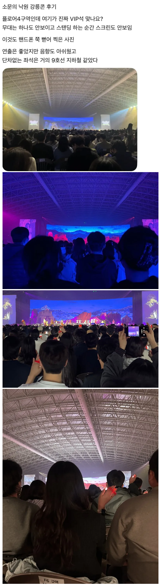

7일 강원도 강릉 올림픽파크 스피드스케이팅 경기장에서 열린 '2026 악뮤 콘서트 [소문의 낙원]
17만6천원 주고 VIP석 예매했는데 전광판도 안보이고 . 단차없는 좌석 . 시야제한석 . 사람 뒤통수만 보고왔다고...
분통터진 팬들은 환불요구중이라고 함

7일 강원도 강릉 올림픽파크 스피드스케이팅 경기장에서 열린 '2026 악뮤 콘서트 [소문의 낙원]
17만6천원 주고 VIP석 예매했는데 전광판도 안보이고 . 단차없는 좌석 . 시야제한석 . 사람 뒤통수만 보고왔다고...
분통터진 팬들은 환불요구중이라고 함
독립해서 이제 소속사 대표가 이찬혁이고 임원이 이찬혁 이수현인데 결국 악뮤가 일을 안했다는 소리네
기합찬 공연이군
내가 모르는 사이에 vip에대한 정의가 바꼈나? vip석이 왜 뒷자린데?
앞으로 더 잘하겠지
찬혁아 다 환불해주고
제대로 된 공연에 티켓 하나씩 줘라
널 찬양할거다
시각장애인 어쩌고 잘하다가 왜이랫노
서울에서만ㅊ해라
스탠딩은 거리제한 둬야하지않나 저 거리에서 스탠딩이 뭔 의미가 있지
키를 키워야지 안보인다고 하는건
소속사가 일을 안한거임 아이유 저번 주경기장 콘서트는 구역 꼼꼼하게 구분하고 암표처리 확실히 해서 칭찬받았는데 그 몇년전까지만해도 콘서트관련으로 줄관리 표관리등등 소속사 일안한다고 개쳐욕먹었음 좀 칭찬받기 시작한게 카엠에서 이담으로 넘어갈때였나?